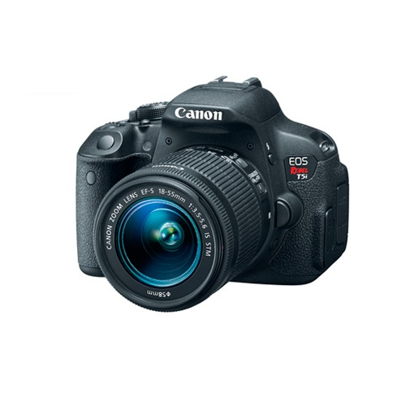

Canon EOS Rebel T5i con 18-55mm
Q 5,990.00
18 MP APS-C CMOS Sensor
DIGIC 5
Pantalla de 3.0″ Angulo Variable Touchscreen
Full HD 1080p Video a 30 fps
9 Puntos de enfoque AF, Hybrid CMOS AF
ISO 12800 Expandible a 25600
63-Zonas Dual-Layer Metering System
EF-S 18-55mm f/3.5-5.6 IS STM
Descripcion
EOS Rebel T5i con lente de 18-55 mm de Canon es una camara de formato APS-C reflex digital con un sensor de 18MP CMOS y el procesador de imagen DIGIC 5. Se combina con el objetivo EF-S 18-55 mm f / 3,5-5,6 IS STM para un alcance efectivo de gran angular de distancia focal estandar.
Con 14 bits de conversion analogica / digital, un rango ISO desde 100-12800 (ampliable a 25.600) y la reduccion de ruido de disparo multiple, la Rebel T5i ofrece detalles nítidos, colores precisos y de imágenes de bajo ruido, tanto en situaciones de disparo brillantes y de poca luz . Sus 9 puntos de enfoque automatico para todos los sistemas de tipo cruz proporciona un enfoque rapido al disparar con el visor y el híbrido CMOS AF aumenta las velocidades de enfoque automatico cuando se dispara con Live View. La Rebel T5i puede disparar de forma continua hasta 5 fps.